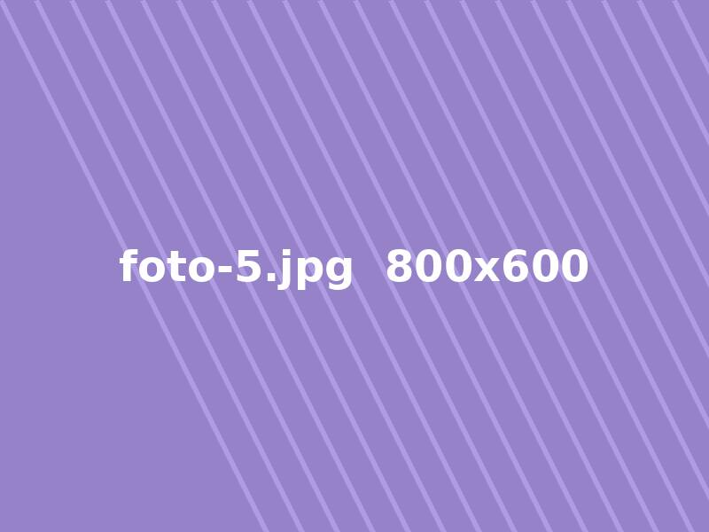

Layanan Kami
Perawatan kesehatan hewan peliharaan kami mencakup pemeriksaan rutin, vaksinasi, dan pengobatan.
Galeri Hewan


Jam Buka
Senin sampai Sabtu, 09.00 hingga 17.00.
Klinik Hewan
Perawatan kesehatan hewan peliharaan kami mencakup pemeriksaan rutin, vaksinasi, dan pengobatan.

Senin sampai Sabtu, 09.00 hingga 17.00.